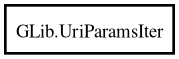

GLib.UriParamsIter – glib-2.0 Reference Manual
UriParamsIter
Object Hierarchy:

Description:
[
Version
( since =
"2.66"
) ]
public
struct
UriParamsIter
Namespace:
GLib
Package:
glib-2.0
Content:
Creation methods:
public
UriParamsIter
(
string
@params,
int
length =
-1
,
string
separators =
"&;"
,
UriParamsFlags
flags =
0
)
Methods:
public
bool
next
(
out
string
attribute =
null
,
out
string
value =
null
)
throws
Error